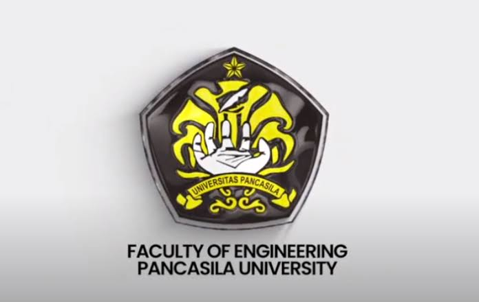
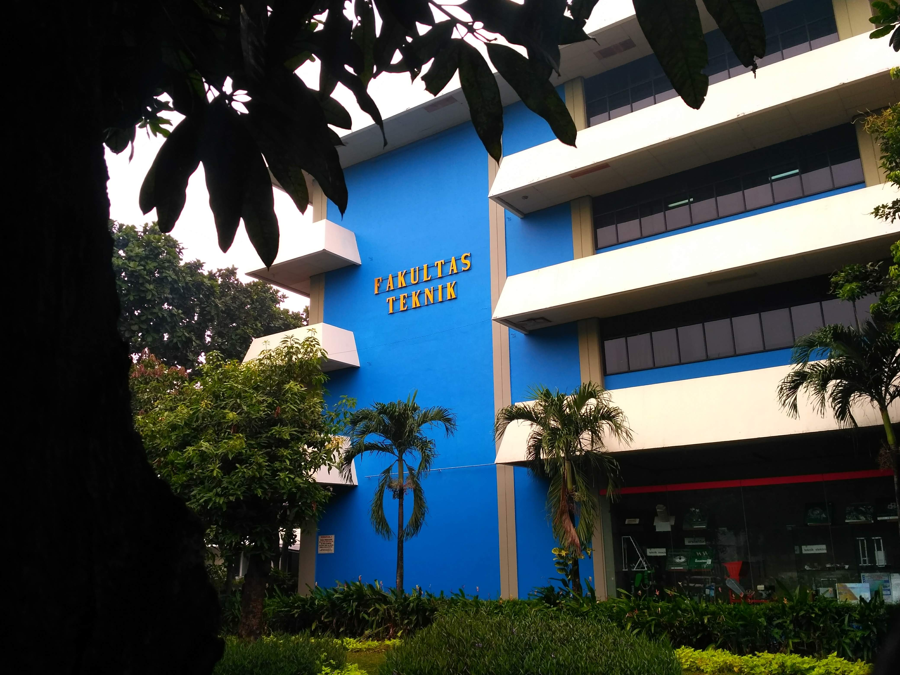

Gedung Kampus


Program Keahlian / Studi
- Program Diploma (D3)
- - Teknik Mesin
- - Teknik Elektronika / Teknik Elektro
- - Mekatronika
- Program Sarjana (S1)
- - Teknik Arsitektur
- - Teknik Sipil
- - Teknik Mesin
- - Teknik Elektro
- - Teknik Industri
- - Teknik Informatika
- - Teknik Perkeretaapian
- Program Profesi
- - Program Studi Profesi Arsitektur
Langkah-Langkah Pendaftaran
-
Akses Situs Resmi: Buka laman
PMB Universitas Pancasila atau
Alur Pendaftaran FTUP.
- Buat Akun: Pilih menu daftar/login menggunakan Akun Google untuk membuat akun PMB.
- Isi Data Diri: Lengkapi formulir data diri dan pilih jenjang pendidikan (D3/S1/S2) serta program studi di Fakultas Teknik.
- Pilih Jalur Seleksi: Tentukan jalur masuk yang diinginkan, seperti Jalur Bersinar (nilai rapor), CBT (Computer Based Test), Beasiswa, atau Jalur Skor SNBT.
- Gunakan Voucher: Masukkan kode voucher khusus (jika ada, seperti
CAMABAUP untuk potongan/gratis biaya pendaftaran sesuai ketentuan yang berlaku).
- Cetak Kartu Ujian/Seleksi: Unduh dan cetak kartu seleksi pendaftaran setelah semua data lengkap.
- Ujian/Seleksi & Pengumuman: Ikuti tahapan seleksi sesuai jalur yang dipilih (atau tunggu verifikasi rapor) dan pantau pengumuman hasilnya.